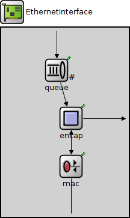
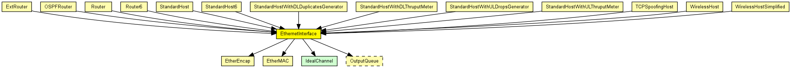
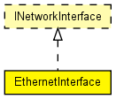

Ethernet network interface. Complements EtherMAC and EtherEncap with an output queue for QoS and RED support.
See also: EthernetInterface2, EthernetInterfaceNoQueue
The following diagram shows usage relationships between types. Unresolved types are missing from the diagram. Click here to see the full picture.
The following diagram shows inheritance relationships for this type. Unresolved types are missing from the diagram. Click here to see the full picture.
If a module type shows up more than once, that means it has been defined in more than one NED file.
| ExtRouter (compound module) |
External router. |
| OSPFRouter (compound module) |
An OSPFv2 router. |
| Router (compound module) |
IP router. |
| Router6 (compound module) |
IPv6 router. |
| StandardHost (compound module) | |
| StandardHost6 (compound module) | |
| StandardHostWithDLDuplicatesGenerator (compound module) |
IP host with TCP, UDP, SCTP layers and applications AND PPPInterfaceWithDLDuplicatesGenerator. |
| StandardHostWithDLThruputMeter (compound module) |
IP host with TCP, UDP, SCTP layers and applications AND PPPInterfaceWithDLThruputMeter. |
| StandardHostWithULDropsGenerator (compound module) |
IP host with TCP, UDP, SCTP layers and applications AND PPPInterfaceWithULDropsGenerator. |
| StandardHostWithULThruputMeter (compound module) |
IP host with TCP, UDP, SCTP layers and applications AND PPPInterfaceWithULThruputMeter. |
| TCPSpoofingHost (compound module) |
IP host with TCPSpoof in the application layer. |
| WirelessHost (compound module) |
Models a host with one wireless (802.11b) card in infrastructure mode. This module is basically a StandardHost with an Ieee80211NicSTA added. It should be used in conjunction with WirelessAP, or any other AP model which contains Ieee80211NicAP. |
| WirelessHostSimplified (compound module) |
Models a host with one wireless (802.11b) card in infrastructure mode, but using a simplified NIC that does not support handovers. This module is basically a StandardHost with an Ieee80211NicSTASimplified added. It should be used in conjunction with WirelessAPSimplified, or any other AP model which contains Ieee80211NicAPSimplified. |
| Name | Type | Default value | Description |
|---|---|---|---|
| queueType | string | "DropTailQueue" |
| Name | Value | Description |
|---|---|---|
| display | i=block/ifcard |
| Name | Direction | Size | Description |
|---|---|---|---|
| netwIn | input | ||
| netwOut | output | ||
| phys | inout |
| Name | Type | Default value | Description |
|---|---|---|---|
| mac.promiscuous | bool | false |
if true, all packets are received, otherwise only the ones with matching destination MAC address |
| mac.address | string | "auto" |
MAC address as hex string (12 hex digits), or "auto". "auto" values will be replaced by a generated MAC address in init stage 0. |
| mac.txrate | double | 100Mbps |
maximum data rate supported by this station (bit/s); actually chosen speed may be lower due to auto- configuration. 0 means fully auto-configured. |
| mac.duplexEnabled | bool | true |
whether duplex mode can be enabled or not; whether MAC will actually use duplex mode depends on the result of the auto-configuration process (duplex is only possible with DTE-to-DTE connection). |
| mac.mtu | int | 1500 |
// // Ethernet network interface. Complements EtherMAC and EtherEncap // with an output queue for QoS and RED support. // // @see EthernetInterface2, EthernetInterfaceNoQueue // module EthernetInterface like INetworkInterface { parameters: string queueType = default("DropTailQueue"); @display("i=block/ifcard"); gates: input netwIn; output netwOut; inout phys @labels(EtherFrame); submodules: queue: <queueType> like OutputQueue { parameters: @display("p=92,71;q=l2queue"); } mac: EtherMAC { parameters: queueModule = "queue"; txQueueLimit = 1; // queue sends one packet at a time @display("p=116,231"); } encap: EtherEncap { parameters: @display("p=116,151"); } connections: netwIn --> queue.in; queue.out --> encap.upperLayerIn; netwOut <-- { @display("m=n"); } <-- encap.upperLayerOut; encap.lowerLayerOut --> mac.upperLayerIn; encap.lowerLayerIn <-- mac.upperLayerOut; mac.phys <--> phys; }